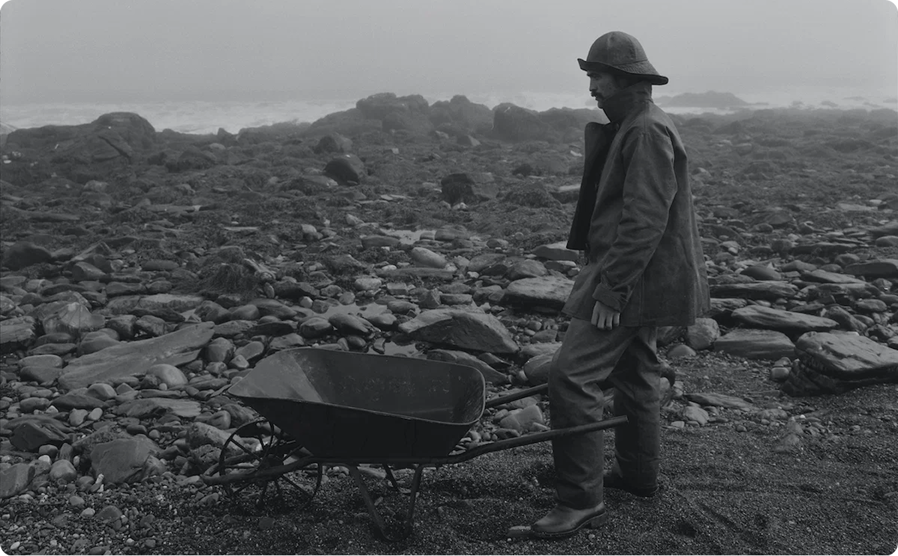
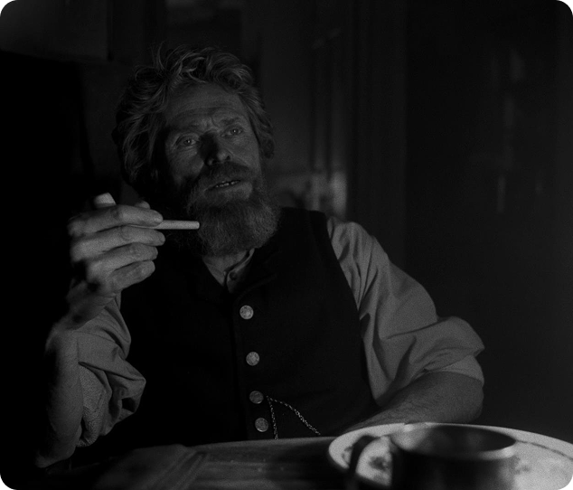
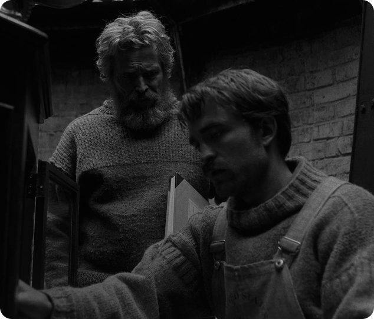
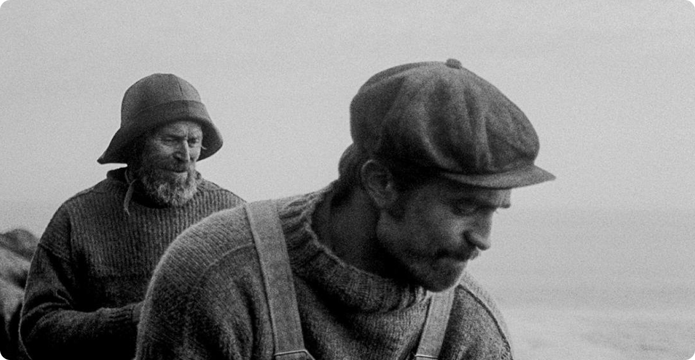
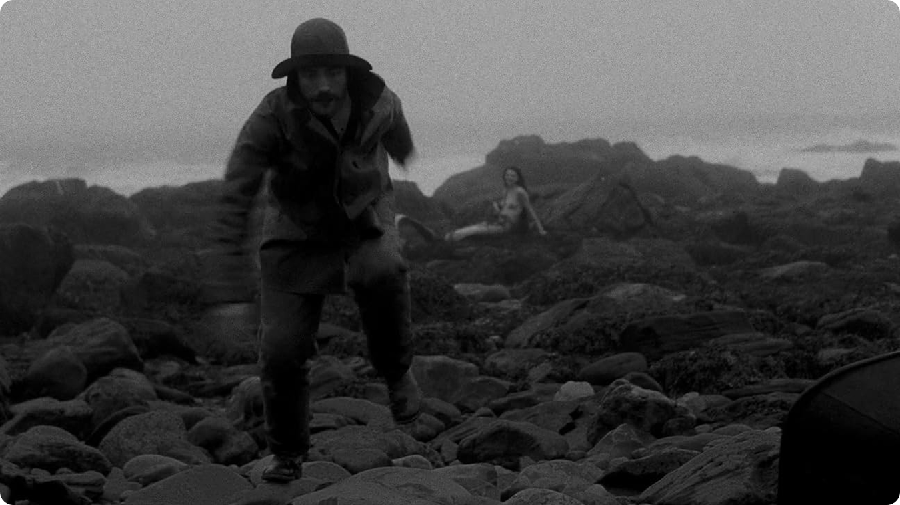
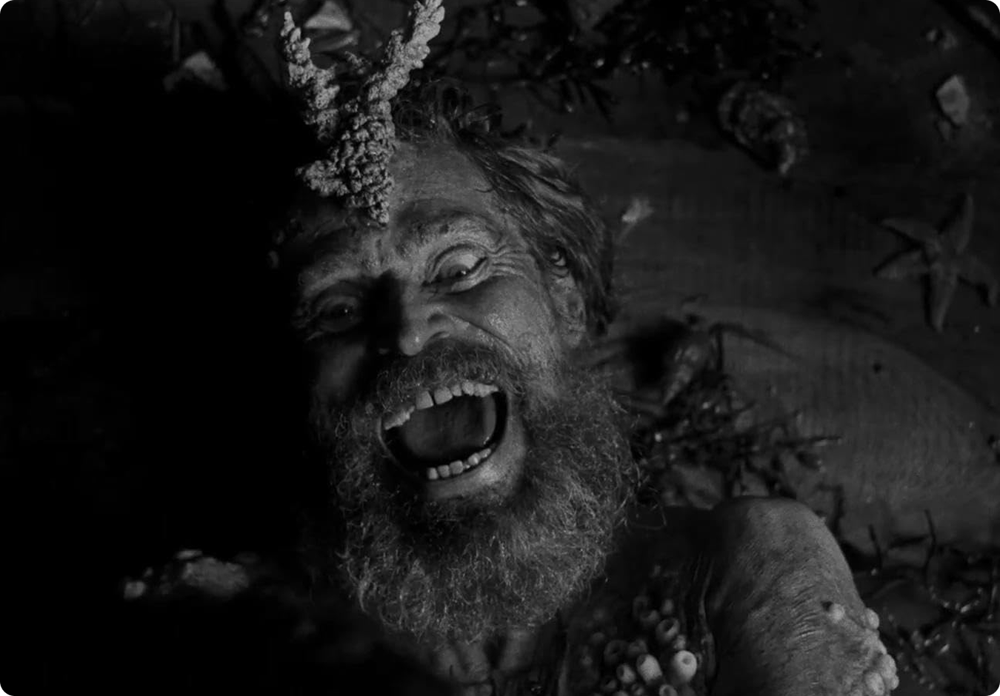

Изоляция как катализатор

Главное, что делает фильм таким тревожным — это полное
отрезание персонажей от внешнего мира. Время
и пространство сжимаются до острова, а шторм
не даёт выйти за его пределы. Психика теряет привычные
ориентиры:
- социальные нормы исчезают;
- ощущение времени размывается;
- внутренние противоречия только усиливаются.
Персонажи остаются наедине с собой и своими страхами,
желаниями, подавленностью. Уже не к кому обратиться,
чтобы проверить реальность.
Власть и подавление


Отношения между героями — это не просто
столкновение характеров, а своего рода модель власти
и подчинения. Старший смотритель жёстко контролирует
младшего, лишая того даже управления простой частью жизни.
Унизительные поручения, постоянная критика, запрет смотреть
на свет маяка — всё это действует не только
как раздражитель, но постепенно разрушает личность. Младший
начинает сомневаться в себе, своих воспоминаниях,
в адекватности восприятия.

Потеря границы реальности
Самый интересный момент — это стирание границ между
реальностью и воображением. Галлюцинации и странные
видения становятся частью обычного восприятия, они перестают
отличаться от реальных событий. Этот художественный приём
отражает состояние психики: подавленные желания пробиваются
наружу, вина и страхи принимают конкретные формы, сознание
утрачивает способность фильтровать окружающий мир. Зритель, как
и герой, оказывается в ловушке, где невозможно понять,
что происходит на самом деле.

Стоит отметить, что безумие здесь не приходит внезапно.
Оно — итог цепочки событий: изоляция ведёт
к давлению, давление подрывает контроль, и в итоге
личность распадается. Конец фильма можно интерпретировать
по-разному, но он не оставляет сомнений
в одном — стремление приблизиться к свету, символу
знания или власти, заканчивается разрушением.

Вывод
В итоге «Маяк» рассказывает не про слабость
отдельных людей, а про то, что происходит с любой
психикой, оказавшейся в похожих условиях. Безумие
здесь — скорее ожидаемый итог, чем случайность.
Возможно, именно эта мысль оставляет после просмотра такое тяжёлое
чувство, ведь в такой ситуации может оказаться кто угодно.